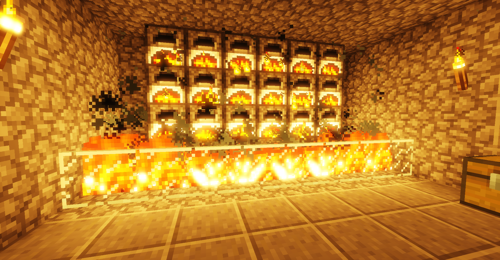
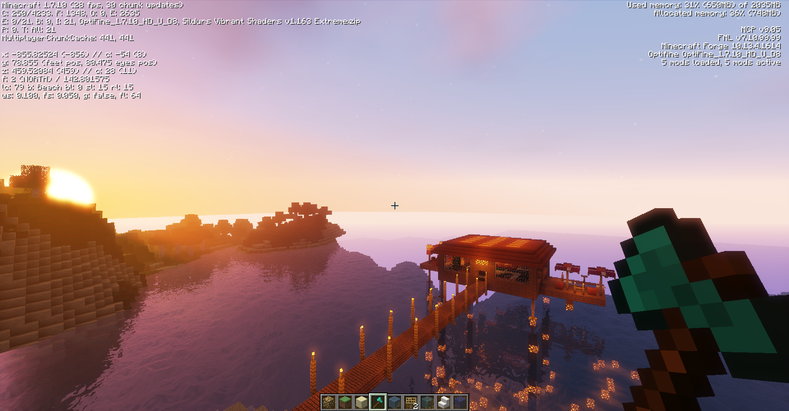
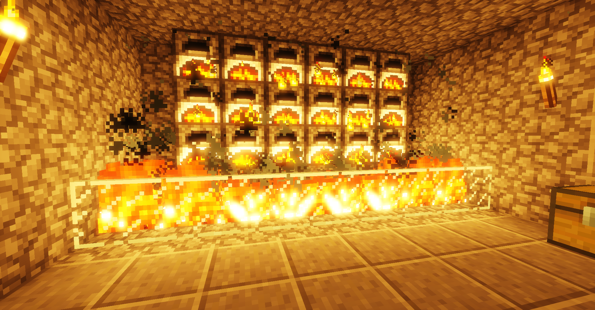
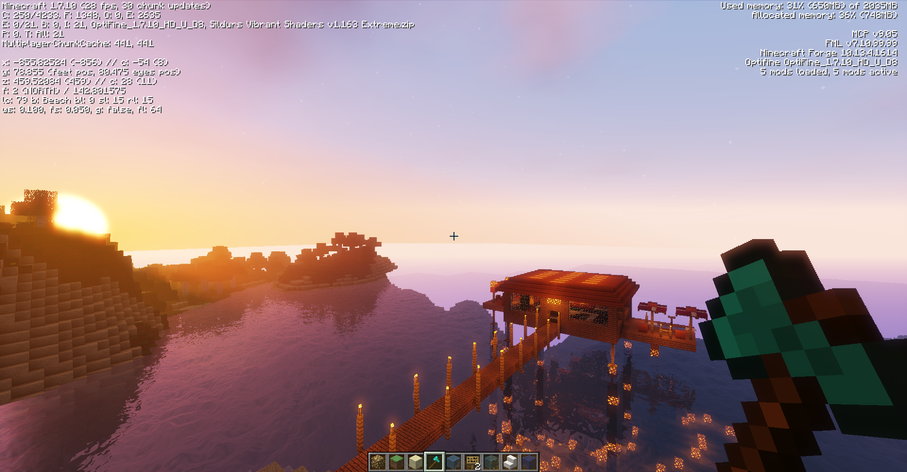
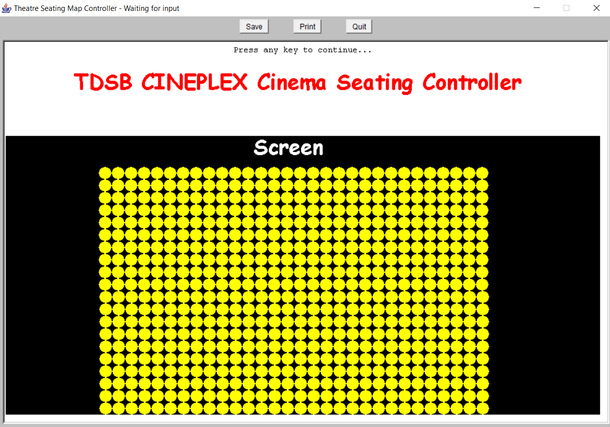
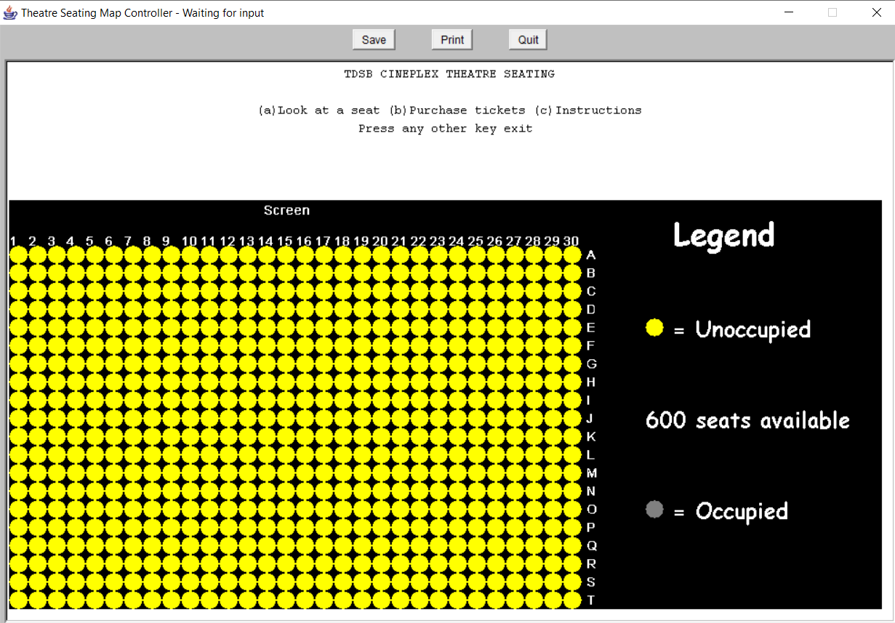
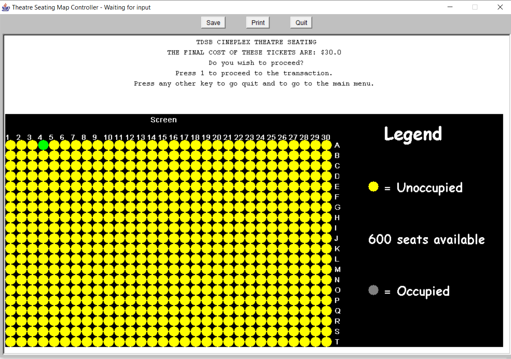
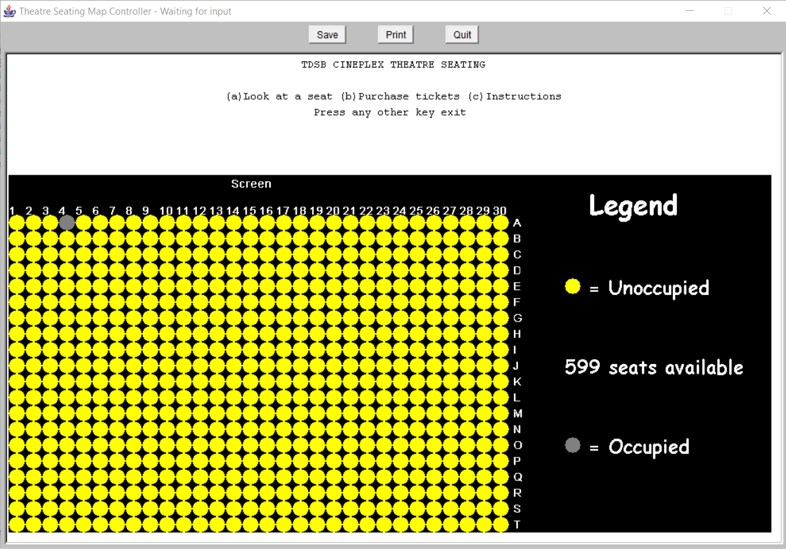
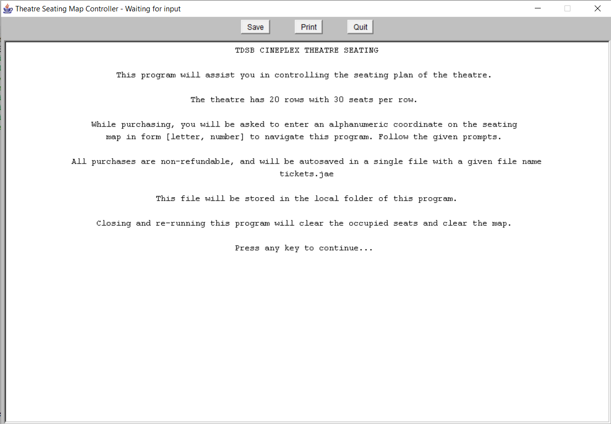
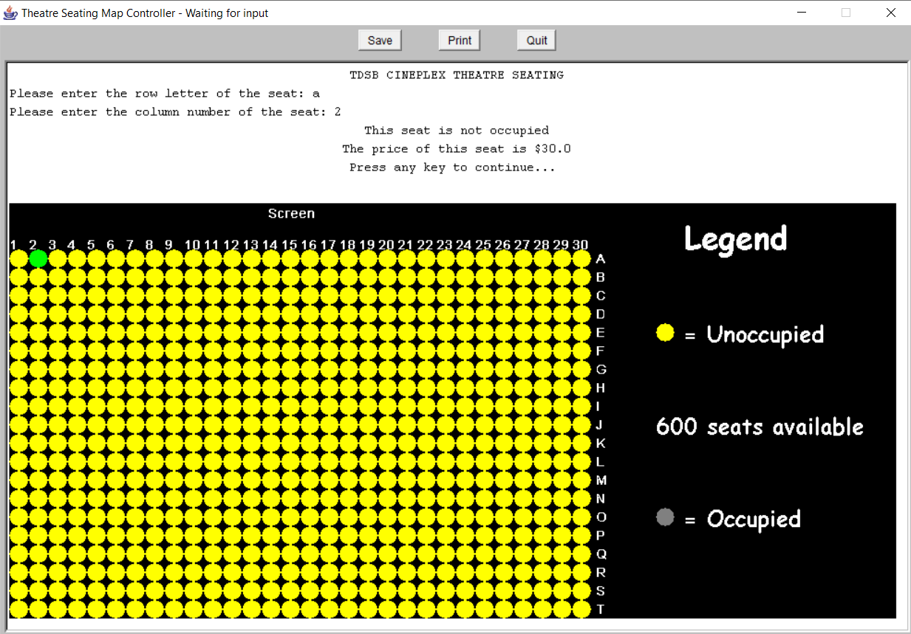

Since 7th grade, I ran servers in an open-world building game called Minecraft to play with my friends. Over the course of 3+ years, we've built many buildings, maps, villiages.
|  |  |
Since 7th grade, I ran servers in an open-world building game called Minecraft to play with my friends. Over the course of 3+ years, we've built many buildings, maps, villiages.
|  |  |
In 2018, my team of 5 drafted and presented a 20 page solution proposal in response to a given problem scenario.
After learning my first programming language, Turing, I made a "Simon Says" game. The source code can be found on my github:
Evolving from the basics of Turing, I learnt the Java language in my grade 11 ICS course, where I made an program for managing theatre seating inside a 30 x 20 theatre seating map.
New concepts that were used in this project were file input/output, and 2d-array manipulation. The source code can be found on my github:
|  |  |
|  |  |
|  |  |
After learning Java, I began branching out into the world of competitve programming. Starting with basic problems on the DMOJ online problem site, I moved on to the school online judge WLMOJ. I am currently ranked 11th in our school, and a few of my solutions to very challenging problems can be found on my Github repository.
This is a development in progress, where my partner, Rohan and I, are developing an educational game to teach the user about fire safety and fire prevention.
This is a development in progress, where I am in the midst of designing and programming my own Discord server auto-moderator, to filter explicit messages sent by people in my server. Through doing this, I am teaching myself Javascript